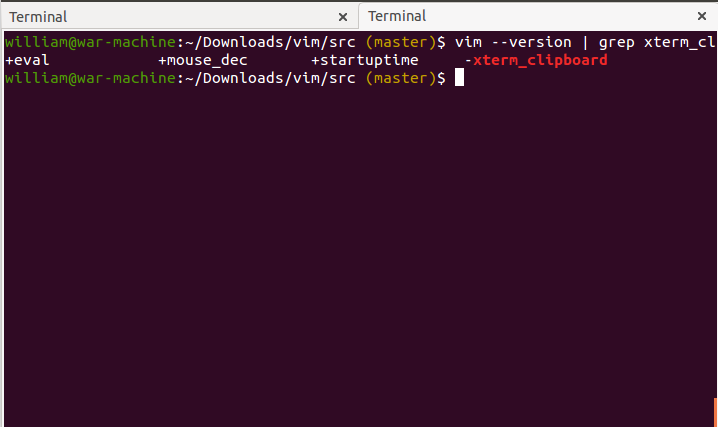

Copiando para o clipboard no Vim
Antes de conhecer os comandos de copiar/colar, execute esse teste no seu terminal:
vim --version | grep xterm_clipboard
Caso apareça igual a imagem abaixo,você se ferrou! - Brinks

Resolvendo o problema de clipboard do Vim com o X11
O Vim não atende o X11 em copiar e colar para o clipboard. Existem maneiras de contornar esse problema, como a desse link. Eu optei por instalar uma versão do Vim com suporte ao clipboard, o vim-gnome. Não tem nada de mais em relação ao Vim "normal" (pelo menos até agora não notei), porém não tive mais problemas com o clipboard.
Agora sim...
Copiando e colando para o clipboard no Vim
”+y : Copia um conteúdo marcado (com v) pra o clipboard.
”+p : Cola o conteúdo do clipboard para o Vim.
Se for copiar uma linha inteira, pode usar ”+yy, por exemplo. O “+ é um registrador do Vim para o Clipboard e você pode criar seus comandos igual acontece com os outros operadores do Vim.
Ex.:
"+5yy
Copia 5 linhas do texto.
Obs:
- Em algumas versões do Vim, existe o suporte a comandos semelhantes à linha de comando, nesses casos a opção de copiar é ctrl + insert ou ctrl + shift + c , e para colar shift + insert ou ctrl + shift + v